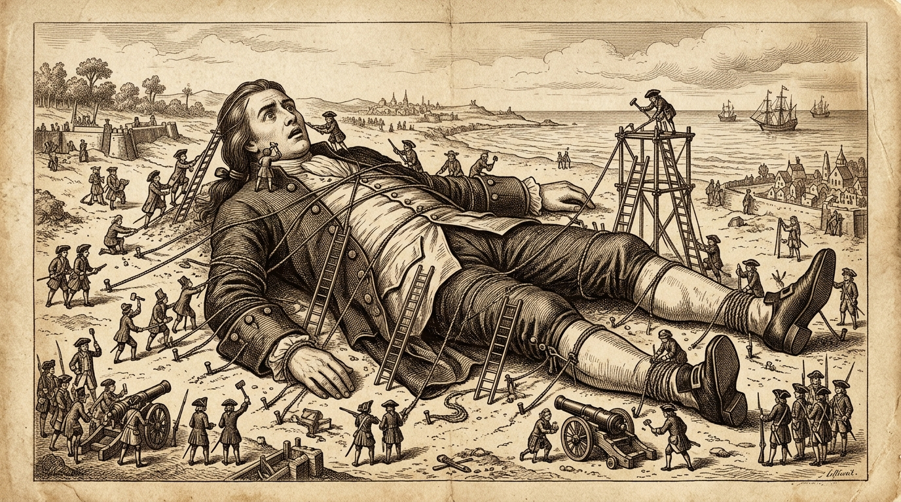

Voyage I · East Indies
Lilliput & Blefuscu
The Empire of Six-Inch Mortals (Scale 1:12)
Miniature Petty Politics

The Man-Mountain & The Illusion of Power
In Lilliput, everything is scaled down to one-twelfth of normal human proportions: six-inch tall citizens, miniature sheep, two-inch horses, and an imperial court bursting with pompous ambition. Gulliver, called Quinbus Flestrin ("The Great Man-Mountain"), could crush the entire capital city of Mildendo under his boots.
Yet despite his overwhelming physical superiority, Gulliver is bound by thousands of tiny threads, fed on carts of cattle, and subjected to the absurd court rituals of the Emperor. Government posts are not awarded to capable statesmen, but to the courtiers who can dance best on a tightrope without breaking their necks.
- Capital City
- Mildendo (Surrounded by a 2.5-foot wall)
- Satirical Target
- Court of King George I & Whig Party corruption